37 imagens, na ordem em que aparecem no texto. A imagem grande de cada cartão é a que está no arquivo da autora. Quando foi possível localizá-la na internet, a versão encontrada aparece ao lado, na caixa cinza, com a licença e o link da fonte — 20 são a mesma imagem, 4 apenas parecidas, 10 não têm fonte de licença livre. Onde há substituta proposta, o cartão remete ao número dela em Sugeridas. Arquivos em Imagens/U2/atuais.
Verde: domínio público ou CC0, uso livre. Laranja: Creative Commons BY ou BY-SA, uso permitido com crédito ao autor na legenda. Vermelho: licença não livre ou não identificada — não usar sem autorização. Clique na miniatura para abrir a página do arquivo e conferir a licença.
1Avenida Paulista, em São Paulo, por volta de 1905 (vista em direção ao Paraíso) Mesma imagem, localizada no Commonsconferido a olho 0.76 / 0.74 Mesmo postal (Série B nº 28), mesma inscrição impressa. Legenda/crédito no texto: “Avenida Paulista- SP em 1905. Fonte: Guilherme Gaensly. Acervo IMS” Mesmo postal (Série B nº 28, Gaensly) identificado pelo número impresso no próprio cartão. O Museu Paulista da USP guarda digitalizações do mesmo autor/série em resolução bem maior (ex.: 'Guilherme Gaensly - Avenida Paulista II'), mas em outro enquadramento/data; mantido o nº 28 por ser o título correspondente. Avenida Paulista, Gaensly, Postal Série B nº 28.jpg Public domain · 1001×650 px Autor/fonte: Guilherme Gaensly página no Commons · arquivo original arquivo: Imagens/U2/atuais/01_Avenida_Paulista_em_Sao_Paulo_por_volta_de_1905_vista_em_dir_COMMONS.jpg arquivo do livro (idêntico ao do Commons): Imagens/U2/atuais/01_Avenida_Paulista_em_Sao_Paulo_por_volta_de_1905_vista_em_dir_DO_LIVRO.jpg
A substituição definitiva do trabalho forçado para o trabalho livre
2Fachada atual do prédio da antiga Hospedaria de Imigrantes do Brás, hoje sede do Museu da Imigração de São Paulo, com visitantes Mesma imagem, localizada no Commonssemelhança medida 1.00 / 0.35 Legenda/crédito no texto: “A Hospedaria de Imigrantes em 1905 e hoje, atual sede do Museu da Imigração. Domínio Público.” É a mesma fotografia (mesmos estudantes e estátuas no gramado), em resolução bem maior. Atenção: a legenda do livro diz 'Domínio Público', mas a licença real no Commons é CC BY-SA 4.0 e exige crédito ao autor José Pedro Viviani. Fachada do Museu da Imigração de São Paulo.JPG CC BY-SA 4.0 · 5184×3456 px Autor/fonte: José Pedro Viviani página no Commons · arquivo original arquivo: Imagens/U2/atuais/02_Fachada_atual_do_predio_da_antiga_Hospedaria_de_Imigrantes_d_COMMONS.jpg arquivo do livro (idêntico ao do Commons): Imagens/U2/atuais/02_Fachada_atual_do_predio_da_antiga_Hospedaria_de_Imigrantes_d_DO_LIVRO.jpg
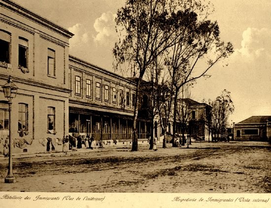
3Hospedaria de Imigrantes do Brás em 1905 (vista interna), postal bilíngue português/francês A que se achou no Commons NÃO é esta imagemsemelhança medida 0.39 / 0.59 Legenda/crédito no texto: “A Hospedaria de Imigrantes em 1905 e hoje, atual sede do Museu da Imigração. Domínio Público.” Mesmo postal exato (legendas idênticas 'Hôtellerie des Immigrants (Vue de l'intérieur)' / 'Hospedaria de Immigrantes (Vista interna)'), em resolução muito maior (arquivo .tif).
Não é a imagem do livro — retrata o mesmo assunto: Public domain · 5616×3744 px Hospedaria de Immigrantes (vista interna), Arquivo Público do Estado de São Paulo (VSP 005).tif Autor/fonte: Desconhecido (Arquivo Público do Estado de São Paulo, álbum Vistas de São Paulo) página no Commons · arquivo original arquivo: Imagens/U2/atuais/03_Hospedaria_de_Imigrantes_do_Bras_em_1905_vista_interna_posta_COMMONS.tif
Há substituta sugerida n.º 7 em Sugeridas, com a fonte e a licença arquivo do livro: Imagens/U2/atuais/03_Hospedaria_de_Imigrantes_do_Bras_em_1905_vista_interna_posta_DO_LIVRO.png
4Marechal Deodoro da Fonseca em trajes de gala, com condecorações Mesma imagem, localizada no Commonssemelhança medida 1.00 / 0.51 Legenda/crédito no texto: “Domínio Público” Mesma fotografia oficial de 1889 (mesma pose, farda e condecorações); há também versão cropada no Commons. Deodoro da Fonseca (1889).jpg Public domain · 1055×1574 px Autor/fonte: Governo do Brasil página no Commons · arquivo original arquivo: Imagens/U2/atuais/04_Marechal_Deodoro_da_Fonseca_em_trajes_de_gala_com_condecorac_COMMONS.jpg Há substituta sugerida n.º 8 em Sugeridas, com a fonte e a licença arquivo do livro (idêntico ao do Commons): Imagens/U2/atuais/04_Marechal_Deodoro_da_Fonseca_em_trajes_de_gala_com_condecorac_DO_LIVRO.jpg
5Visconde de Ouro Preto (Afonso Celso de Assis Figueiredo), último chefe de gabinete de Dom Pedro II Mesma imagem, localizada no Commonssemelhança medida 1.00 / 0.68 Legenda/crédito no texto: “Domínio Público.” Mesmo retrato oval (óculos, bigode e cavanhaque), circa 1889; confirmado por comparação visual direta. Visconde de ouro preto 1889.jpg Public domain · 697×788 px Autor/fonte: Desconhecido página no Commons · arquivo original arquivo: Imagens/U2/atuais/05_Visconde_de_Ouro_Preto_Afonso_Celso_de_Assis_Figueiredo_ulti_COMMONS.jpg arquivo do livro (idêntico ao do Commons): Imagens/U2/atuais/05_Visconde_de_Ouro_Preto_Afonso_Celso_de_Assis_Figueiredo_ulti_DO_LIVRO.jpg
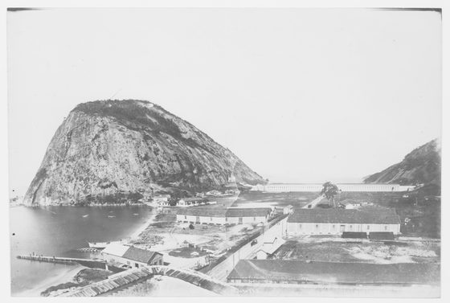
6Escola Militar da Praia Vermelha, Rio de Janeiro, vista panorâmica com o Morro da Urca/Pão de Açúcar ao fundo A que se achou no Commons NÃO é esta imagemsemelhança medida 0.31 / 0.69 Legenda/crédito no texto: “O professor militar positivista Benjamin Constant e a Escola Militar da Praia Vermelha (1900) de onde se montou a resistência ao governo monárquico.” Mesmo enquadramento do prédio ao longo da praia com o morro ao fundo; acervo do Instituto Moreira Salles, resolução muito maior.
Não é a imagem do livro — retrata o mesmo assunto: Public domain · 10007×6728 px A Escola Militar da Praia Vermelha (007A5P4F02-038).jpg Autor/fonte: Núcleo de digitalização / IMS (Instituto Moreira Salles) página no Commons · arquivo original arquivo: Imagens/U2/atuais/06_Escola_Militar_da_Praia_Vermelha_Rio_de_Janeiro_vista_panora_COMMONS.jpg
arquivo do livro: Imagens/U2/atuais/06_Escola_Militar_da_Praia_Vermelha_Rio_de_Janeiro_vista_panora_DO_LIVRO.jpg
7Benjamin Constant Botelho de Magalhães, professor militar positivista, em pé, uniforme de gala Mesma imagem, localizada no Commonssemelhança medida 1.00 / 0.69 Legenda/crédito no texto: “O professor militar positivista Benjamin Constant e a Escola Militar da Praia Vermelha (1900) de onde se montou a resistência ao governo monárquico.” Mesma fotografia de estúdio (mesmo cenário pintado, cadeira e mesa com toalha); Fundo Agência Nacional, 1889. Benjamin Constant.tif Public domain · 1674×2476 px Autor/fonte: Desconhecido (Fundo Agência Nacional) página no Commons · arquivo original arquivo: Imagens/U2/atuais/07_Benjamin_Constant_Botelho_de_Magalhaes_professor_militar_pos_COMMONS.tif Há substituta sugerida n.º 9 em Sugeridas, com a fonte e a licença arquivo do livro (idêntico ao do Commons): Imagens/U2/atuais/07_Benjamin_Constant_Botelho_de_Magalhaes_professor_militar_pos_DO_LIVRO.png
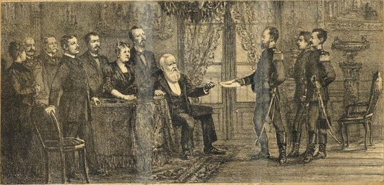
8Gravura do major Sólon entregando a Dom Pedro II a carta que comunica a deposição, 16 de novembro de 1889, com a família imperial ao redor Fonte não encontrada Legenda/crédito no texto: “O major Sólon entrega carta comunicando a deposição de Dom Pedro II em 16 de novembro. Fonte: Galeria historica da revolução brasileira. Senado Brasileiro. Domínio Público.” Gravura de publicação antiga (Galeria histórica da revolução brasileira, Senado). Não localizada no Wikimedia Commons após várias buscas textuais (Sólon, Dom Pedro II, proclamação, gravura) nem via WebSearch; parece não estar digitalizada/catalogada online com metadados acessíveis. Não se achou esta imagem na internet — a que aparece acima é a do próprio arquivo da autora. arquivo do livro: Imagens/U2/atuais/08_Gravura_do_major_Solon_entregando_a_Dom_Pedro_II_a_carta_que_DO_LIVRO.jpg
O governo Deodoro da Fonseca (1889-1891)
9Juramento constitucional: Deodoro da Fonseca e Floriano Peixoto tomam posse após a promulgação da Constituição de 1891 Mesma imagem, com outro enquadramentoconferido a olho 0.18 / 0.34 Mesma tela do Juramento Constitucional; o livro usa recorte mais fechado. Legenda/crédito no texto: “Juramento constitucional. Obra de Aurélio de Figueiredo. Museu da República. Domínio Público.” Mesmo óleo (Juramento Constitucional, Museu da República), mesma composição confirmada visualmente. Título no Commons é uma versão cortada ('cropped') da obra.
É a mesma imagem, em outro enquadramento ou versão: Public domain · 1021×1013 px CF - 1891 (cropped).jpg Autor/fonte: Aurélio de Figueiredo página no Commons · arquivo original arquivo: Imagens/U2/atuais/09_Juramento_constitucional_Deodoro_da_Fonseca_e_Floriano_Peixo_COMMONS.jpg
arquivo do livro: Imagens/U2/atuais/09_Juramento_constitucional_Deodoro_da_Fonseca_e_Floriano_Peixo_DO_LIVRO.jpg
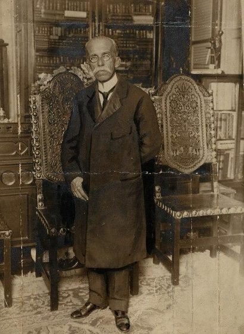
10Rui Barbosa em pé, entre poltronas ornamentadas, provavelmente em sua biblioteca A que se achou no Commons NÃO é esta imagemsemelhança medida -0.25 / 0.54 Legenda/crédito no texto: “(sem legenda direta; texto ao redor descreve a biblioteca de Rui Barbosa na rua São Clemente, RJ)” Mesma pessoa (traços compatíveis: calvície, óculos redondos, bigode fino), mas retrato de busto diferente do original (que é de corpo inteiro numa sala com estantes/poltronas). Não encontrada no Commons a foto exata de corpo inteiro na biblioteca.
Não é a imagem do livro — retrata o mesmo assunto: Public domain · 485×734 px Rui Barbosa.jpg Autor/fonte: F. Diaz página no Commons · arquivo original arquivo: Imagens/U2/atuais/10_Rui_Barbosa_em_pe_entre_poltronas_ornamentadas_provavelmente_COMMONS.jpg
arquivo do livro: Imagens/U2/atuais/10_Rui_Barbosa_em_pe_entre_poltronas_ornamentadas_provavelmente_DO_LIVRO.jpg
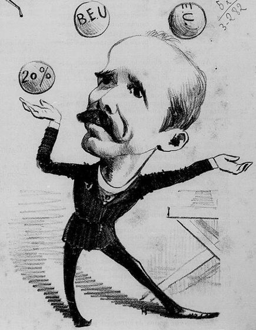
11Charge de época satirizando o Encilhamento: homem fazendo malabarismo com bolas rotuladas 'B.E.U', 'C' e '20%' Fonte não encontrada Legenda/crédito no texto: “Domínio Público. (a política de Rui Barbosa chamou-se Encilhamento)” Charge de jornal humorístico de 1890-91 (estilo Revista Ilustrada/O Mequetrefe). Não localizada no Commons nem via WebSearch após várias tentativas (Encilhamento, caricatura Rui Barbosa, O Malho). Não se achou esta imagem na internet — a que aparece acima é a do próprio arquivo da autora. arquivo do livro: Imagens/U2/atuais/11_Charge_de_epoca_satirizando_o_Encilhamento_homem_fazendo_mal_DO_LIVRO.jpg
12Marechal Floriano Peixoto, retrato oficial em farda de gala Mesma imagem, localizada no Commonssemelhança medida 1.00 / 0.63 Legenda/crédito no texto: “Domínio Público” Mesma foto oficial (traços, farda e condecorações compatíveis), presidente do Brasil 1891-1894. Floriano Peixoto (1891).jpg Public domain · 1052×1574 px Autor/fonte: Governo do Brasil página no Commons · arquivo original arquivo: Imagens/U2/atuais/12_Marechal_Floriano_Peixoto_retrato_oficial_em_farda_de_gala_COMMONS.jpg arquivo do livro (idêntico ao do Commons): Imagens/U2/atuais/12_Marechal_Floriano_Peixoto_retrato_oficial_em_farda_de_gala_DO_LIVRO.jpg
A Revolta Federalista (1893-1895)
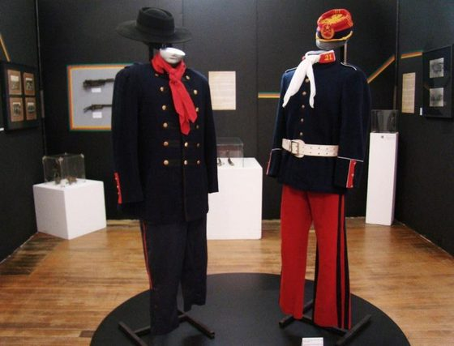
13Uniformes dos maragatos e pica-paus expostos em museu (manequins) Fonte não encontrada Legenda/crédito no texto: “Uniforme dos maragatos e pica-paus respectivamente expostos em museu. Fonte: Universidade de Passo Fundo. https://www.upf.br” Foto de acervo/exposição de museu universitário (UPF), creditada no próprio livro. Não é do Commons; não localizada em buscas (uniforme maragatos/pica-paus, Federalist Revolution uniform museum). Não se achou esta imagem na internet — a que aparece acima é a do próprio arquivo da autora. arquivo do livro: Imagens/U2/atuais/13_Uniformes_dos_maragatos_e_pica_paus_expostos_em_museu_manequ_DO_LIVRO.jpg
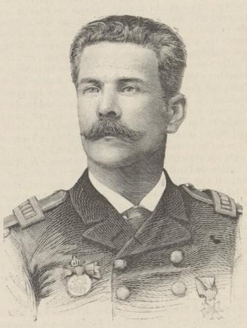
14Gravura do almirante Custódio José de Mello, líder da Revolta da Armada A que se achou no Commons NÃO é esta imagemconferido a olho 0.57 / 0.53 A do livro é fotografia; a do Commons é gravura feita a partir de retrato semelhante. Legenda/crédito no texto: “Gravuras da esquadra que se insurgiu e do líder da revolta Custódio de Melo. Domínio Público.” Mesmo estilo de gravura (farda, dragonas, medalha) de 1891; resolução baixa, mas é o retrato gravado equivalente encontrado no Commons. Há também outra gravura semelhante ('L'amiral de Mello, commandant la flotte devant Rio-de-Janeiro.jpg') do mesmo personagem, ângulo diferente.
Não é a imagem do livro — retrata o mesmo assunto: Public domain · 322×269 px Contra-almirante Custodio José de Mello, Ministro da Marinha.jpg Autor/fonte: Desconhecido página no Commons · arquivo original arquivo: Imagens/U2/atuais/14_Gravura_do_almirante_Custodio_Jose_de_Mello_lider_da_Revolta_COMMONS.jpg
arquivo do livro: Imagens/U2/atuais/14_Gravura_do_almirante_Custodio_Jose_de_Mello_lider_da_Revolta_DO_LIVRO.jpg
15A esquadra insurreta (navios da Revolta da Armada), desenho de José Pardal Mesma imagem, localizada no Commonssemelhança medida 1.00 / 0.58 Legenda/crédito no texto: “Gravuras da esquadra que se insurgiu e do líder da revolta Custódio de Melo. Domínio Público.” Mesmo desenho (mesmo título/assinatura do autor, 'José Pardal', que no livro aparece como 'José Pandal'), 21/10/1893, mesmas dimensões aproximadas. A Esquadra Insurrecta (Desenho pelo Sr. José Pardal).jpg Public domain · 810×620 px Autor/fonte: José Pardal página no Commons · arquivo original arquivo: Imagens/U2/atuais/15_A_esquadra_insurreta_navios_da_Revolta_da_Armada_desenho_de_COMMONS.jpg arquivo do livro (idêntico ao do Commons): Imagens/U2/atuais/15_A_esquadra_insurreta_navios_da_Revolta_da_Armada_desenho_de_DO_LIVRO.jpg
16Prudente de Morais, primeiro presidente civil da República, retrato oficial Mesma imagem, localizada no Commonssemelhança medida 0.92 / 0.69 Legenda/crédito no texto: “Domínio Público.” Mesma fotografia oficial (barba, gravata-borboleta e pose idênticas), circa 1894. Prudentedemorais.jpg Public domain · 1035×1548 px Autor/fonte: Governo do Brasil página no Commons · arquivo original arquivo: Imagens/U2/atuais/16_Prudente_de_Morais_primeiro_presidente_civil_da_Republica_re_COMMONS.jpg Há substituta sugerida n.º 10 em Sugeridas, com a fonte e a licença arquivo do livro (idêntico ao do Commons): Imagens/U2/atuais/16_Prudente_de_Morais_primeiro_presidente_civil_da_Republica_re_DO_LIVRO.jpg
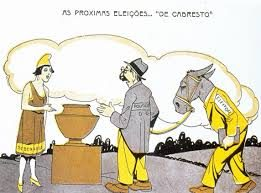
17Charge sobre o voto de cabresto: um cabo eleitoral oferece dinheiro a um eleitor amarrado a um burro com cabresto, texto 'As próximas eleições... DE CABRESTO' Fonte identificada fora do Commons Legenda/crédito no texto: “Domínio Público, (sobre coronelismo e voto de cabresto)” A imagem do livro é uma versão colorida/redesenhada (estilo flat/digital) da charge original 'As próximas eleições... de cabresto', de Alfredo Storni, publicada na revista Careta em 1927. O original em preto e branco não foi localizado no Wikimedia Commons (buscado como 'Storni cabresto/Careta/burro eleições'); o Commons tem outras charges do mesmo autor de 1930-33 (ex.: File:Alfredo Storni - Adesismo à Revolução.jpg), mas não esta. Observação: a versão exata usada no livro (colorida) provavelmente não é de domínio público por si (é uma reinterpretação gráfica moderna); melhor solução seria substituir pela charge original de Storni em P&B. Fonte: https://br.pinterest.com/pin/534239574518567769/ arquivo do livro: Imagens/U2/atuais/17_Charge_sobre_o_voto_de_cabresto_um_cabo_eleitoral_oferece_di_DO_LIVRO.png
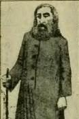
18Antônio Conselheiro, líder messiânico de Canudos, vestido com o hábito azul e apoiado num bordão A que se achou no Commons NÃO é esta imagemsemelhança medida 0.02 / 0.37 Legenda/crédito no texto: “Domínio Público.” A pequena imagem do livro (116x173px, muito comprimida) mostra Conselheiro sozinho, de hábito e bordão, na mesma pose da figura central desta charge de Agostini (Revista Ilustrada, 1897) — pode ser um recorte dela. Como não há certeza de que seja exatamente o mesmo recorte, mantido como 'similar'; é a melhor fonte livre encontrada para uma representação de época de Conselheiro de corpo inteiro (a única fotografia dele foi feita já morto, após exumação).
Não é a imagem do livro — retrata o mesmo assunto: Public domain · 1409×1346 px Conselheiro Revista Ilustrada.jpg Autor/fonte: Angelo Agostini página no Commons · arquivo original arquivo: Imagens/U2/atuais/18_Antonio_Conselheiro_lider_messianico_de_Canudos_vestido_com_COMMONS.jpg
Há substituta sugerida n.º 11 em Sugeridas, com a fonte e a licença arquivo do livro: Imagens/U2/atuais/18_Antonio_Conselheiro_lider_messianico_de_Canudos_vestido_com_DO_LIVRO.jpg
19Sobreviventes de Canudos (mulheres e crianças) reunidos após a destruição do arraial, 1897 Mesma imagem, localizada no Commonsconferido a olho 0.64 / 0.44 Mesma foto dos sobreviventes de Canudos; a do Commons é um pouco mais aberta. Legenda/crédito no texto: “Fotografia real e planta do Arraial de Canudos em 1897. Domínio Público.” Mesma fotografia (mesmo grupo e enquadramento), do fotógrafo Flávio de Barros, 1897; resolução maior no Commons. Canudos rebels.jpg Public domain · 1927×1252 px Autor/fonte: Flávio de Barros página no Commons · arquivo original arquivo: Imagens/U2/atuais/19_Sobreviventes_de_Canudos_mulheres_e_criancas_reunidos_apos_a_COMMONS.jpg Há substituta sugerida n.º 12 em Sugeridas, com a fonte e a licença arquivo do livro (idêntico ao do Commons): Imagens/U2/atuais/19_Sobreviventes_de_Canudos_mulheres_e_criancas_reunidos_apos_a_DO_LIVRO.png
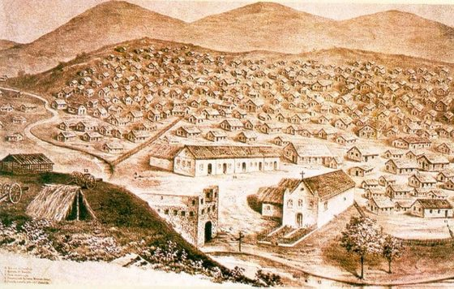
20Planta/desenho do Arraial de Canudos, vista geral com a igreja e casebres, 1897 Fonte não encontrada Legenda/crédito no texto: “Fotografia real e planta do Arraial de Canudos em 1897. Domínio Público.” Desenho/planta de época do arraial (provavelmente de publicação sobre a Guerra de Canudos). Não localizado no Commons após buscas (planta Arraial Canudos, Canudos map illustration, Os Sertões ilustração). Não se achou esta imagem na internet — a que aparece acima é a do próprio arquivo da autora. arquivo do livro: Imagens/U2/atuais/20_Planta_desenho_do_Arraial_de_Canudos_vista_geral_com_a_igrej_DO_LIVRO.png
Campos Sales (1898-1902)
21Campos Sales, presidente do Brasil, retrato oficial Mesma imagem, localizada no Commonssemelhança medida 1.00 / 0.75 Legenda/crédito no texto: “Domínio Público.” Mesma fotografia oficial (bigode e cavanhaque característicos confirmados visualmente), circa 1898. Campos Sales.jpg Public domain · 1055×1574 px Autor/fonte: Governo do Brasil página no Commons · arquivo original arquivo: Imagens/U2/atuais/21_Campos_Sales_presidente_do_Brasil_retrato_oficial_COMMONS.jpg Há substituta sugerida n.º 13 em Sugeridas, com a fonte e a licença arquivo do livro (idêntico ao do Commons): Imagens/U2/atuais/21_Campos_Sales_presidente_do_Brasil_retrato_oficial_DO_LIVRO.jpg
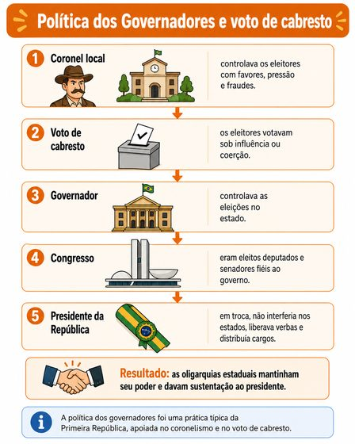
22Infográfico esquemático: Política dos Governadores e voto de cabresto (coronel > voto de cabresto > governador > Congresso > presidente) Ícone / esquema da autora Legenda/crédito no texto: “Imagem criada por IA.” Esquema/infográfico gerado por IA para o próprio livro (a legenda já indica a origem); não é uma imagem de arquivo/Commons e não precisa de fonte externa. arquivo do livro: Imagens/U2/atuais/22_Infografico_esquematico_Politica_dos_Governadores_e_voto_de_DO_LIVRO.png
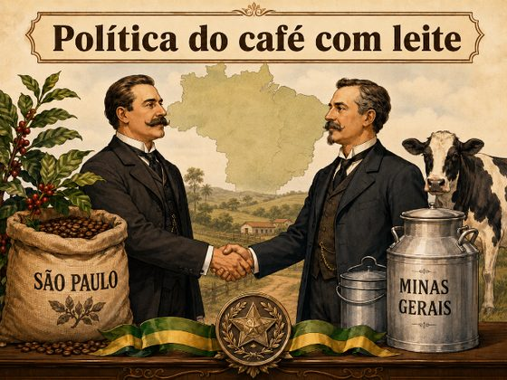
23Ilustração gerada por IA representando a Política do Café com Leite (dois homens apertando as mãos, sacas de café de SP e latas de leite de MG) Ícone / esquema da autora Legenda/crédito no texto: “Imagem criada por IA.” Ilustração gerada por IA para o próprio livro (a legenda já indica a origem); não precisa de fonte externa. Poderia ser substituída por uma charge de época sobre a política Café com Leite, se se preferir uma imagem histórica real (não localizamos uma específica com esse tema exato). arquivo do livro: Imagens/U2/atuais/23_Ilustracao_gerada_por_IA_representando_a_Politica_do_Cafe_co_DO_LIVRO.png
Rodrigues Alves (1902-1906)
24Rodrigues Alves, presidente do Brasil, retrato oficial com óculos de aro fino Mesma imagem, localizada no Commonssemelhança medida 1.00 / 0.79 Legenda/crédito no texto: “(sem legenda direta nesta posição; ver legenda de image39 logo após)” Mesma fotografia oficial (óculos, barba e pose idênticos), circa 1902. Rodrigues Alves 3.jpg Public domain · 1055×1574 px Autor/fonte: Governo do Brasil página no Commons · arquivo original arquivo: Imagens/U2/atuais/24_Rodrigues_Alves_presidente_do_Brasil_retrato_oficial_com_ocu_COMMONS.jpg Há substituta sugerida n.º 14 em Sugeridas, com a fonte e a licença arquivo do livro (idêntico ao do Commons): Imagens/U2/atuais/24_Rodrigues_Alves_presidente_do_Brasil_retrato_oficial_com_ocu_DO_LIVRO.jpg
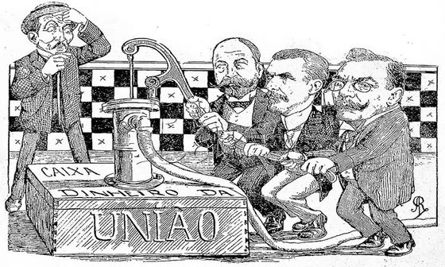
25Charge sobre o Convênio de Taubaté: governadores de SP, RJ e MG bombeando dinheiro do 'Caixa da União' Fonte não encontrada Legenda/crédito no texto: “Charge sobre o Convênio de Taubaté. O Malho, 1906. Domínio Público.” Charge da revista O Malho (1906), creditada no livro. Não localizada no Commons após várias buscas (Taubaté charge/caricatura, O Malho 1906, Taubaté coffee agreement cartoon). Não se achou esta imagem na internet — a que aparece acima é a do próprio arquivo da autora. arquivo do livro: Imagens/U2/atuais/25_Charge_sobre_o_Convenio_de_Taubate_governadores_de_SP_RJ_e_M_DO_LIVRO.png
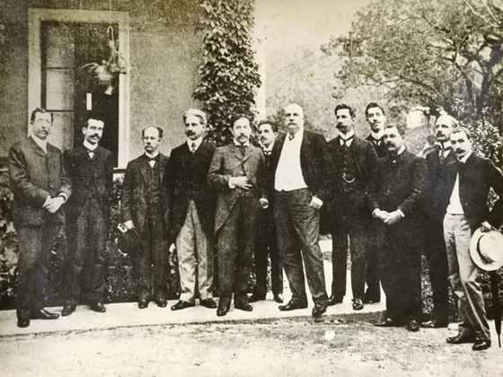
26Barão do Rio Branco com diplomatas brasileiros e bolivianos na assinatura do Tratado de Petrópolis, 1903 Fonte não encontrada Legenda/crédito no texto: “O Barão de Rio Branco junto a diplomatas brasileiros e bolivianos na assinatura do Tratado de Petrópolis. Foto: Departamento de Patrimônio Histórico e Cultural da Fundação Elias Mansour.” Fonte já credita a Fundação Elias Mansour (Acre). Não localizada no Wikimedia Commons (buscas por Tratado de Petrópolis/assinatura/delegação Bolívia só retornaram mapas de fronteira e fotos modernas de comemorações). Não se achou esta imagem na internet — a que aparece acima é a do próprio arquivo da autora. arquivo do livro: Imagens/U2/atuais/26_Barao_do_Rio_Branco_com_diplomatas_brasileiros_e_bolivianos_DO_LIVRO.png
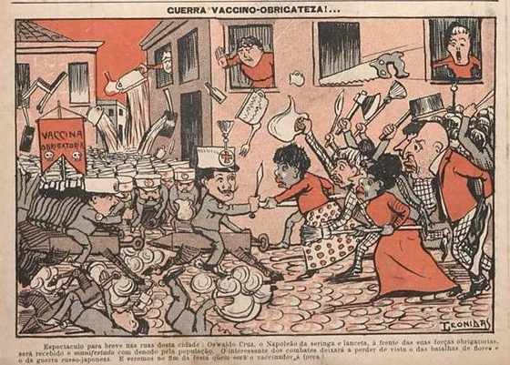
27Charge 'Guerra Vaccino-Obrigateza!': Oswaldo Cruz e as brigadas de vacinação obrigatória enfrentando a população, 1904 Mesma imagem, com outro enquadramentoconferido a olho 0.27 / 0.26 Mesma charge 'Guerra Vaccino-Obrigatoria'; difere só o recorte da legenda de rodapé. Legenda/crédito no texto: “Revolta da Vacina Charge de 1904. LEÔNIDAS. Acervo Fundação Casa de Rui Barbosa, Rio de Janeiro.” Mesma charge, mesmo título e legenda ('Espetaculo para breve nas ruas desta cidade: Oswaldo Cruz...'), mesmo autor (Leônidas); resolução bem maior no Commons.
É a mesma imagem, em outro enquadramento ou versão: Public domain · 1236×868 px Guerra Vaccino-Obrigateza!.jpg Autor/fonte: Leonidas Freire (1882-1943) página no Commons · arquivo original arquivo: Imagens/U2/atuais/27_Charge_Guerra_Vaccino_Obrigateza_Oswaldo_Cruz_e_as_brigadas_COMMONS.jpg
arquivo do livro: Imagens/U2/atuais/27_Charge_Guerra_Vaccino_Obrigateza_Oswaldo_Cruz_e_as_brigadas_DO_LIVRO.jpg
Outros fatos importantes da Década de 1920 até a Revolução de 30
28Greve geral de 1917 em São Paulo: multidão de operários com bandeiras (vermelhas) marchando pelas ruas centrais Mesma imagem, localizada no Commonssemelhança medida 1.00 / 0.28 Legenda/crédito no texto: “Greve de operários comandada pelos anarquistas em SP em 1917. Domínio Público.” Mesma fotografia exata (mesma multidão, mesmas duas bandeiras escuras/vermelhas, mesmos prédios), confirmada visualmente; resolução muito maior no Commons. São Paulo (Greve de 1917).jpg Public domain · 3193×1945 px Autor/fonte: Desconhecido (publicado em A Cigarra, 1917) página no Commons · arquivo original arquivo: Imagens/U2/atuais/28_Greve_geral_de_1917_em_Sao_Paulo_multidao_de_operarios_com_b_COMMONS.jpg arquivo do livro (idêntico ao do Commons): Imagens/U2/atuais/28_Greve_geral_de_1917_em_Sao_Paulo_multidao_de_operarios_com_b_DO_LIVRO.jpg
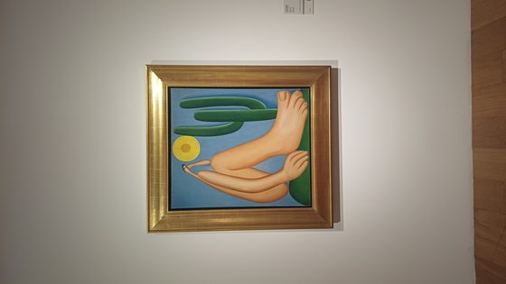
29'Abaporu', quadro de Tarsila do Amaral (1928): pés/pernas desproporcionais, cacto e sol A que se achou no Commons NÃO é esta imagemsemelhança medida -0.07 / 0.45 Legenda/crédito no texto: “Malfatti com a obra Festa de São João e Tarsila de Amaral com O Abaporu. Domínio Público.” É a mesma obra (mesma composição), mas fotografada emoldurada numa exposição no MALBA (Buenos Aires), não a reprodução limpa usada no livro. ATENÇÃO - direitos autorais: a legenda do livro diz 'Domínio Público', o que está ERRADO: Tarsila do Amaral faleceu em 1973, e a obra (1928) só entra em domínio público no Brasil em 2044. O CC BY 4.0 no Commons cobre apenas a foto da exposição, não a obra em si; uso requer licenciamento/autorização do espólio da artista.
Não é a imagem do livro — retrata o mesmo assunto: CC BY 4.0 (da fotografia; ver nota) · 2250×4000 px Abaporu en el MALBA.jpg Autor/fonte: Tarsila do Amaral (obra); foto de Archer2025 página no Commons · arquivo original arquivo: Imagens/U2/atuais/29_Abaporu_quadro_de_Tarsila_do_Amaral_1928_pes_pernas_despropo_COMMONS.jpg
arquivo do livro: Imagens/U2/atuais/29_Abaporu_quadro_de_Tarsila_do_Amaral_1928_pes_pernas_despropo_DO_LIVRO.jpg
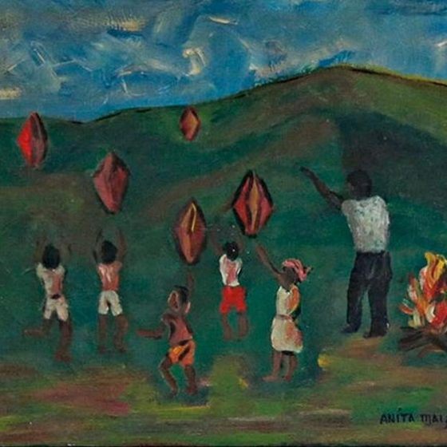
30'Festa de São João', quadro de Anita Malfatti: crianças com balões/pandorgas ao redor de fogueira junina Fonte não encontrada Legenda/crédito no texto: “Malfatti com a obra Festa de São João e Tarsila de Amaral com O Abaporu. Domínio Público.” Não localizada no Commons (buscas: Anita Malfatti Festa de São Joao/obras/Saint John Festival). ATENÇÃO - direitos autorais: mesmo se encontrada, Anita Malfatti faleceu em 1964; a obra só entra em domínio público no Brasil em 2035. A legenda do livro ('Domínio Público') está incorreta para esta pintura. Não se achou esta imagem na internet — a que aparece acima é a do próprio arquivo da autora. arquivo do livro: Imagens/U2/atuais/30_Festa_de_Sao_Joao_quadro_de_Anita_Malfatti_criancas_com_balo_DO_LIVRO.jpg
31Lampião e seu bando, incluindo Maria Bonita, 1936-1937 Mesma imagem, localizada no Commonsconferido a olho 0.61 / 0.54 Mesma foto de Lampião e do bando; recorte e contraste diferentes. Legenda/crédito no texto: “Lampião e seu bando em 1936. Domínio Público.” Mesma fotografia exata (mesmo grupo, mesmas poses, Maria Bonita ao centro), confirmada visualmente; encontro de Benjamin Abrahão com o bando de Lampião, 1936-37. 1886lampiao5g.jpg Public domain · 500×324 px Autor/fonte: Benjamin Abrahão Botto página no Commons · arquivo original arquivo: Imagens/U2/atuais/31_Lampiao_e_seu_bando_incluindo_Maria_Bonita_1936_1937_COMMONS.jpg arquivo do livro (idêntico ao do Commons): Imagens/U2/atuais/31_Lampiao_e_seu_bando_incluindo_Maria_Bonita_1936_1937_DO_LIVRO.jpg
Tenentismo: A Revolta do Forte de Copacabana e a Coluna Prestes.
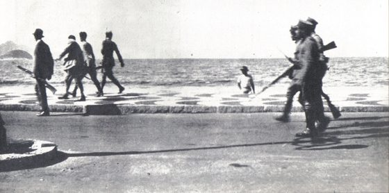
32Os 18 do Forte marcham pela orla da Av. Atlântica ao encontro das forças legalistas, 6/7/1922 A que se achou no Commons NÃO é esta imagemsemelhança medida 0.24 / 0.41 Legenda/crédito no texto: “Domínio Público.” Mesma fotografia (mesmas dimensões, mesmo calçadão em pastilhas, mesmas figuras), Revolta dos 18 do Forte de Copacabana, 6/7/1922.
Não é a imagem do livro — retrata o mesmo assunto: Public domain · 900×446 px Os 18 do Forte (2).jpg Autor/fonte: Desconhecido página no Commons · arquivo original arquivo: Imagens/U2/atuais/32_Os_18_do_Forte_marcham_pela_orla_da_Av_Atlantica_ao_encontro_COMMONS.jpg
arquivo do livro: Imagens/U2/atuais/32_Os_18_do_Forte_marcham_pela_orla_da_Av_Atlantica_ao_encontro_DO_LIVRO.jpg
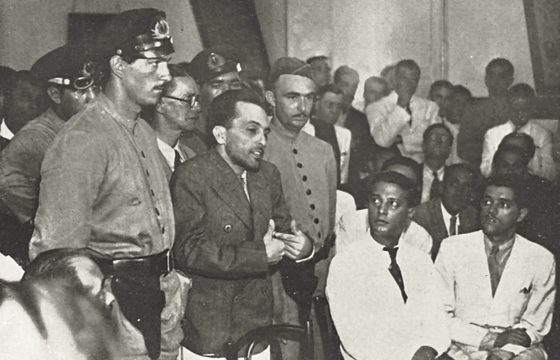
33Luís Carlos Prestes cercado por policiais/militares e público, quando preso Fonte não encontrada Legenda/crédito no texto: “Luís Carlos Prestes quando preso em 1937. Domínio Púbico.” Não localizada no Commons após buscas (Prestes preso 1937/1936, julgamento tribunal, Prestes preso). Há uma foto relacionada mas diferente (polícia examinando documentos no esconderijo de Prestes em 1936: File:Prestes polícia examina documentos esconderijo 1936.png), sem Prestes na cena. Não se achou esta imagem na internet — a que aparece acima é a do próprio arquivo da autora. arquivo do livro: Imagens/U2/atuais/33_Luis_Carlos_Prestes_cercado_por_policiais_militares_e_public_DO_LIVRO.png
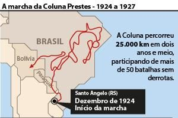
34Mapa/infográfico do trajeto da Coluna Prestes (1924-1927), com rota traçada entre Brasil, Bolívia e Paraguai Fonte identificada fora do Commons Legenda/crédito no texto: “Fonte: https://www.camara.leg.br/noticias/434245-saiba-mais-sobre-a-coluna-prestes/” Mapa/infográfico moderno, já com fonte própria indicada no livro (site da Câmara dos Deputados); não é um item do Wikimedia Commons. Fonte: https://www.camara.leg.br/noticias/434245-saiba-mais-sobre-a-coluna-pr arquivo do livro: Imagens/U2/atuais/34_Mapa_infografico_do_trajeto_da_Coluna_Prestes_1924_1927_com_DO_LIVRO.jpg
Fundação e Desenvolvimento do Partido Comunista no Brasil
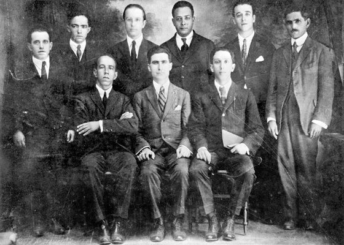
35Fundadores do Partido Comunista do Brasil, reunião de março de 1922 em Niterói A que se achou no Commons NÃO é esta imagemsemelhança medida 0.34 / 0.43 Legenda/crédito no texto: “Fundadores do PCB em 1922. Domínio Público.” Mesma fotografia (mesmo grupo de 9 homens, duas fileiras), com identificação nominal de cada fundador; resolução muito maior no Commons.
Não é a imagem do livro — retrata o mesmo assunto: Public domain · 1968×1404 px Fundadores do PCB.jpg Autor/fonte: Desconhecido página no Commons · arquivo original arquivo: Imagens/U2/atuais/35_Fundadores_do_Partido_Comunista_do_Brasil_reuniao_de_marco_d_COMMONS.jpg
arquivo do livro: Imagens/U2/atuais/35_Fundadores_do_Partido_Comunista_do_Brasil_reuniao_de_marco_d_DO_LIVRO.jpg
Revolução de 1930. Fim da Primeira República.
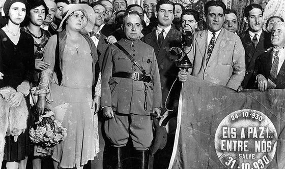
36Getúlio Vargas em farda militar, cercado por populares (mulheres com flores) diante de faixa comemorativa '24-10-930 ... Eis a paz!.. entre nós ... Salve 31-10-930' A que se achou no Commons NÃO é esta imagemsemelhança medida -0.00 / 0.28 Legenda/crédito no texto: “Arquivo Nacional – Domínio Público.” Não é a mesma foto, mas é do mesmo evento/viagem (a faixa '24-10 a 31-10-930... Eis a paz entre nós' remete ao célebre 'abraço de Itararé', 24/10/1930, quando as tropas revolucionárias e legalistas evitaram o confronto). O Commons tem uma dezena de fotos dessa viagem de trem de Vargas (Porto Alegre-Rio, out-nov 1930: Itararé, Ponta Grossa, chegada ao Rio, Palácio do Catete); nenhuma encontrada é pixel-idêntica à do livro, mas seriam boas alternativas/substitutas em domínio público.
Não é a imagem do livro — retrata o mesmo assunto: Public domain · 1220×804 px Getúlio Vargas em Itararé (2).jpg Autor/fonte: Claro Jansson página no Commons · arquivo original arquivo: Imagens/U2/atuais/36_Getulio_Vargas_em_farda_militar_cercado_por_populares_mulher_COMMONS.jpg
arquivo do livro: Imagens/U2/atuais/36_Getulio_Vargas_em_farda_militar_cercado_por_populares_mulher_DO_LIVRO.jpg
Vamos Exercitar:
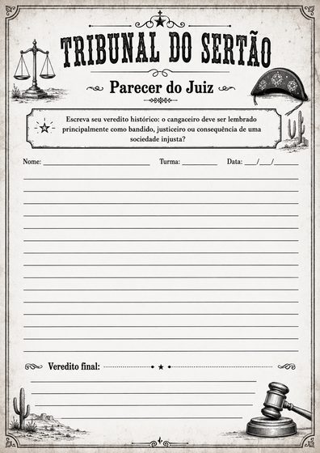
37Modelo de atividade impresso 'Tribunal do Sertão - Parecer do Juiz', com molduras decorativas (balança, cacto, martelo) Ícone / esquema da autora Legenda/crédito no texto: “(modelo de exercício, sem legenda de crédito)” Molde/planilha de atividade criada para o livro (decorativo), não requer fonte externa. arquivo do livro: Imagens/U2/atuais/37_Modelo_de_atividade_impresso_Tribunal_do_Sertao_Parecer_do_J_DO_LIVRO.png


.jpg)

.jpg)